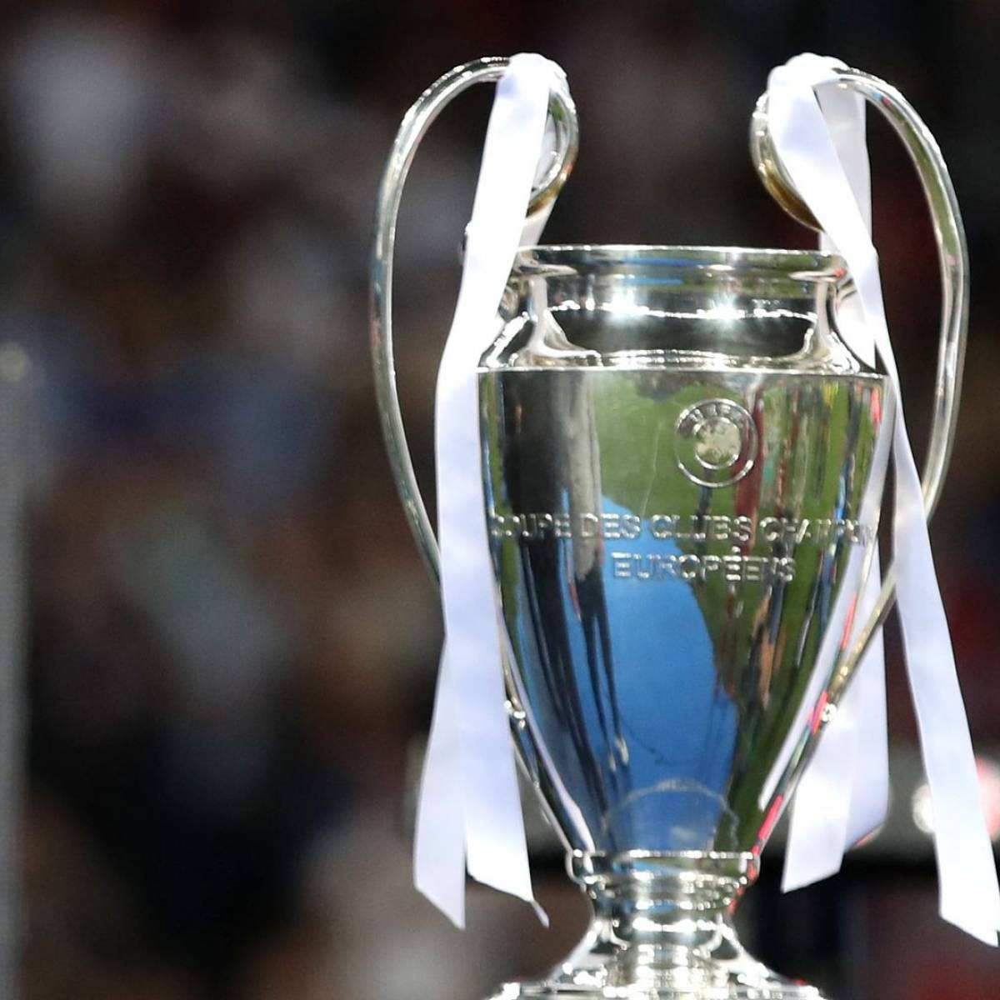
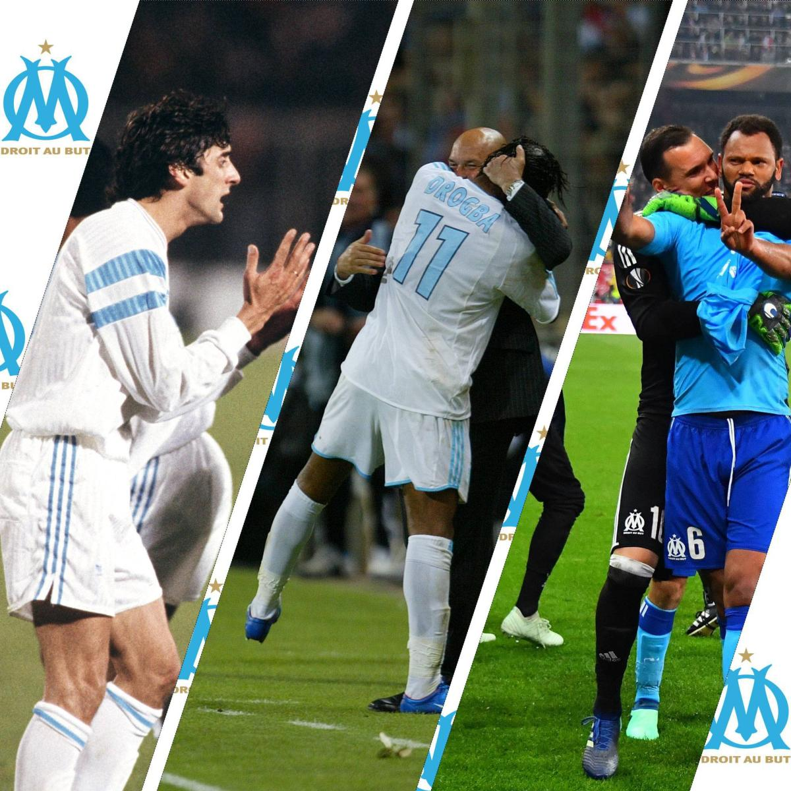
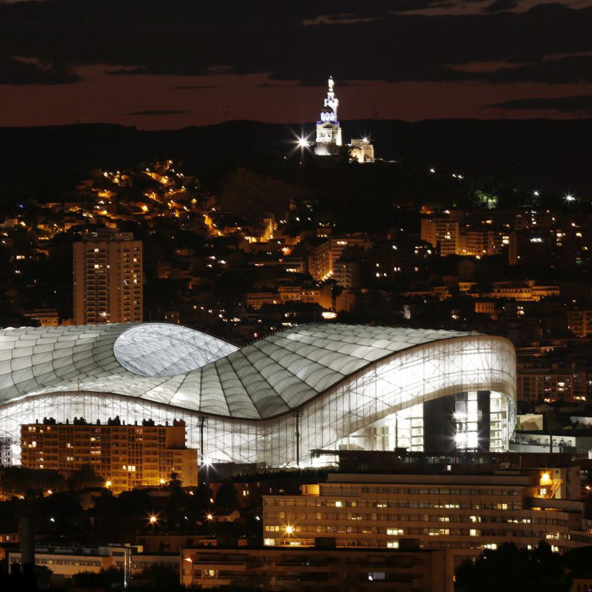

OLYMPIQUE DE MARSEILLE
Notre club est l'un des plus grands et des plus respectés du monde. Depuis notre création en 1899, nous avons remporté 9 titres nationaux et 1 titre européen, ce qui fait de nous l'un des clubs les plus décorés de l'histoire du football français.
  Notre équipe est composée de certains des meilleurs joueurs du monde, dirigés par un entraîneur expérimenté et talentueux. Nous sommes fiers de représenter notre ville et notre pays sur la scène internationale, et nous sommes toujours à la recherche de nouveaux talents pour nous aider à atteindre de nouveaux sommets.
Sur notre site, vous trouverez toutes les dernières nouvelles et informations sur notre club, y compris les résultats des matchs, les transferts, les statistiques des joueurs, les billets pour les matchs et bien plus encore. Nous avons également une boutique en ligne où vous pouvez acheter des maillots, des écharpes, des casquettes et d'autres articles officiels du club.